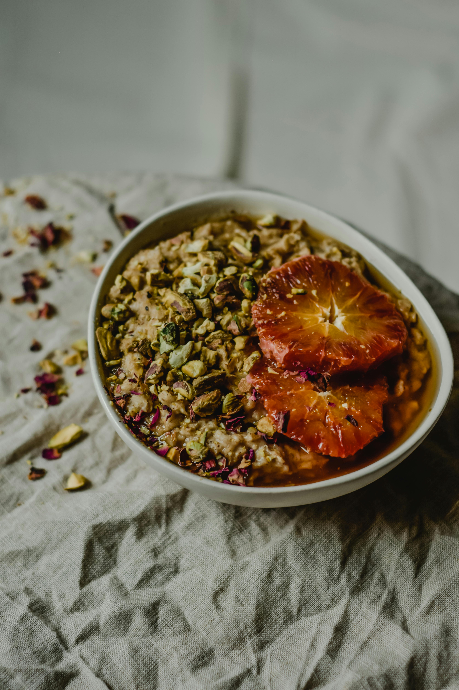

How to Make Viking Barley Porridge

Nordic barley porridge, known as byggrynsgrøt in Norway, is a traditional, slow-cooked dish made from pearl barley simmered in milk until tender and creamy.
Naturally nutty and satisfying, this rustic porridge has been a staple in Scandinavian kitchens for centuries, offering both comfort and nourishment with every spoonful.
Ingredients
- 1 cup pearl barley
- 4 cups water
- 1/2 tsp salt
- 2 tbsp butter
- 1/2 cup milk or cream
- 1/4 cup honey or brown sugar (optional)
Directions
- In a large saucepan, combine the pearl barley, water, and salt.
Bring to a boil,then reduce the heat to low and simmer for 45-60 minutes, or until the barley is tender and most of the liquid has been absorbed.
- Stir in the butter and milk or cream, and continue to cook for an additional 5-10 minutes, or until the porridge reaches your desired consistency.
Sweeten with honey or brown sugar, if desired, and serve hot.
Home